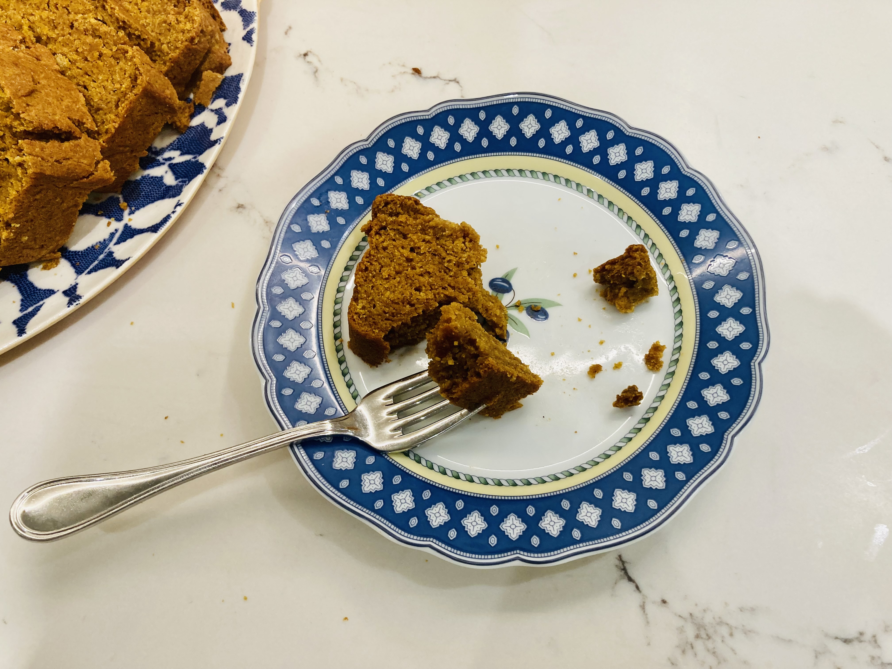

Perfect Pumpkin Bread
November, 2021
This recipe is one of my favorites for so many reasons! It is seasonally inspired and spiced, requires only pantry ingredients, and uses a special trick to make pumpkin toffee bits.